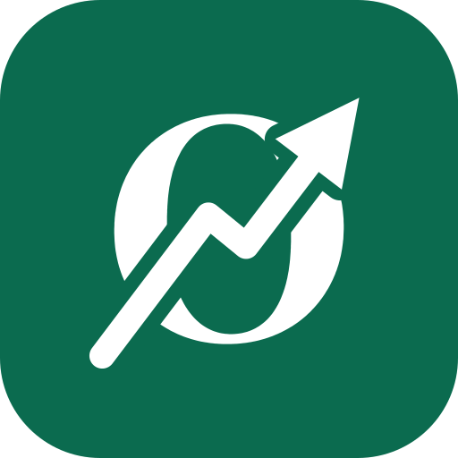

Tilbage til ØkonomisPrivatliv
Senest opdateret 9. oktober 2026
Kort fortalt
- Dine tal bliver på din egen enhed. De sendes aldrig til os eller andre.
- Der er ingen konto, ingen cookies, ingen sporing og ingen reklamer.
- Det eneste, der sendes til os, er en feedbackbesked, hvis du selv vælger at skrive en.
Dine tal
Alt, hvad du skriver ind – budget, formue, månedsstatus, portefølje, lån, mål og indstillinger – gemmes i din browsers lokale lager (localStorage) på den enhed, du bruger. Det sendes ikke over internettet, og vi kan ikke se det. Derfor kan vi heller ikke gendanne dine tal, hvis de forsvinder: tag en backup under Indstillinger › Gem mine data.
Du sletter dine tal ved at slette webstedsdata for Økonomis i din browsers indstillinger. Har du lagt Økonomis på hjemmeskærmen på en iPhone eller iPad, har appen sit eget lager, som slettes, når du fjerner appen.
Backupfiler
Gem mine data laver en fil med dine tal. Den gemmes eller deles kun dér, hvor du selv vælger (fx i Filer, iCloud eller Google Drive), og den indeholder dine tal i læsbar form – så pas på den, som du ville passe på et kontoudtog.
Delte links
Når du deler en beregning fra et af værktøjerne, ligger tallene i linket (efter #-tegnet). Den del sendes ikke til nogen server, men alle, der får linket – og den tjeneste, du sender det med – kan se tallene. Dine trackere (formue, portefølje, budget og lån) kan ikke deles som link.
Kodelås, Face ID og fingeraftryk
Slår du kodelåsen til, gemmes selve koden ikke – kun en omregnet udgave af den (et saltet hash), som koden ikke kan regnes tilbage ud fra, og kun på enheden. Låser du op med Face ID eller fingeraftryk, er det din enhed, der genkender dig; Økonomis ser aldrig dit ansigt eller dit fingeraftryk.
Feedback
Skriver du en besked under Giv feedback, sendes din besked, den type, du vælger, hvilket værktøj du stod i og – hvis du skriver den – din e-mail via tjenesten Formspree (en amerikansk virksomhed), som sender den videre til os. Som ved al trafik på internettet ser Formspree også din IP-adresse, når beskeden sendes.
Beskeden bruges kun til at forbedre siden og til at svare dig, hvis du har skrevet din e-mail. Den deles ikke med andre og slettes senest 12 måneder efter, vi har modtaget den. Du sender den, fordi du selv vælger det, og du kan til enhver tid bede om at se den eller få den slettet – skriv det i en ny besked, gerne med samme e-mail. Skriv ikke personnumre, kontonumre eller andre følsomme oplysninger i en besked.
Hvor siden ligger
Økonomis ligger på GitHub Pages. Som ved alle hjemmesider ser serveren din IP-adresse, når siden hentes, og GitHub kan gemme den i en periode af sikkerhedshensyn. Vi får ikke adgang til de oplysninger.
Skrifttyper, grafer og alt andet ligger på siden selv, så der hentes intet fra andre servere, mens du bruger Økonomis. Siden virker også uden internet, når den først er hentet.
Ændringer og kontakt
Ændrer vi, hvordan oplysninger behandles, opdaterer vi denne side og datoen øverst. Økonomis er lavet af Simon Grynnerup Skouboe. Har du spørgsmål om privatliv, så skriv under Giv feedback i appen.